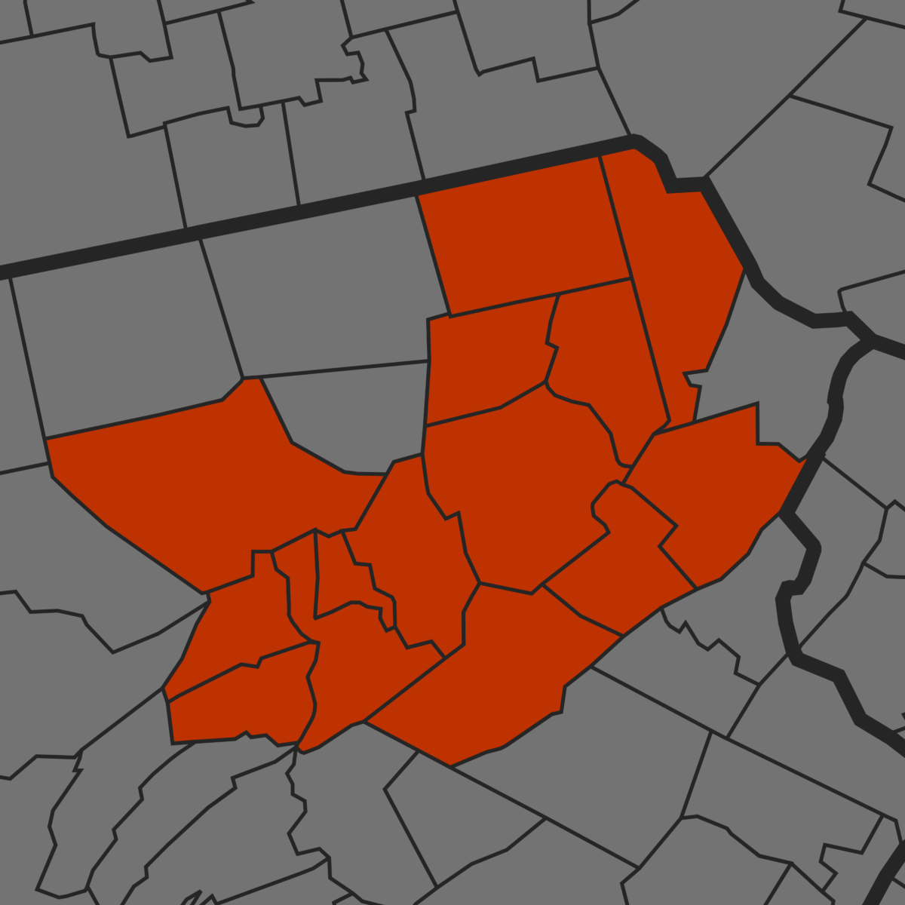

The Susquehanna Valley Running Calendar was launched on September 6, 2025, to provide comprehensive race information for runners in Columbia, Luzerne, Montour, Northumberland, and neighboring counties.

Disclaimer: Event details are provided by organizers and may change without notice. Please check official sources to verify information. The listing of an event on this site does not imply endorsement.